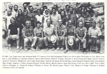
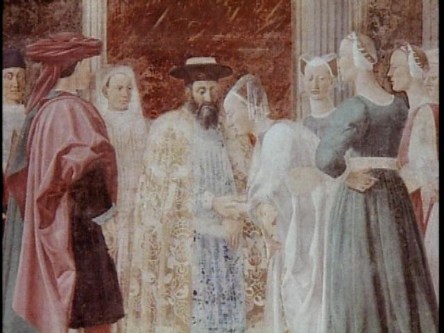
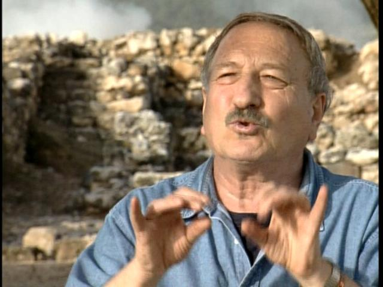
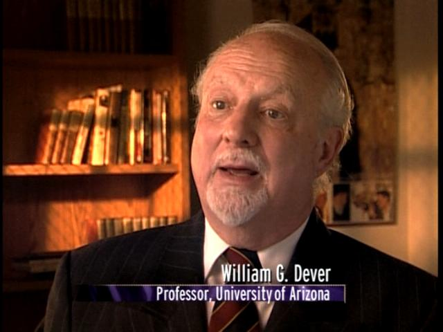

The 1971 Excavation of King Solomon's Gate at Tel Gezer
proved
the existence of the real King Solomon
and was followed
by a series of apocalyptic paranormal events


Until the summer of 1971 archaeology had failed to prove the historical basis of the Bible, the Torah, and the Quran as contemporary recordings of events as seen through the eyes of Iron Age Man. The walls of Jericho had fallen from grace, the dream of Biblical Archaeologist William Foxwell Albright was still just a theory. That summer Yigael Yadin would complete the first scientific proof of King Solomon's life by finding the city gate of Gezer which King Solomon built circa 960 BC, and the Bible described in 1 Kings 9:15... and I swung the pic axe for him.
"Now this is the way King Solomon conscripted the Labor Corps to build the house of the Lord, his house, the Millo, the wall of Jerusalem, Hazor, Megiddo, and Gezer"
The Holy Bible 1 Kings 9:15
The Solomonic Gate and wall complex at Tel Gezer was the third Solomonic Gate discovered. Scientifically, combined with the discoveries of the Megiddo Gate in the 1930's and the Hazor Gate in the 1950's, the discovery of the city gate of Gezer completed the scientific proof of Solomon's reign with rocks on the ground. It validated the historical basis of the Bible, Torah, and Quran and confirmed the rationale for the state of Israel's existence. It naturally follows that if Solomon really built the three Gates, then he also built the "House of the Lord", and the identical structures indicate one team of master masons. It was the long sought after historical nexus where scientific theory finally validated one critical piece of History sitting at the hinge of western civilization. The Old Testament was indeed written contemporaneously with most of the events it describes and is a valid recording of the viewpoints of Iron Age Man (GREAT History Channel discussion ! ) ( PBS )
|
"Everything depends on one verse in the Bible,... and that is... 1 Kings 9:15" |
|
Archaeologist Israel
Finkelstein |
|
Seven years after the excavation, in the fictional hollywood horror movie "The Omen II", the Solomonic Gate Excavations by Yigael Yadin played a featured role as "Yigael's Wall"... a herald of the apocalypse showing Revelations Face. The Fictional Movie Trailer shows several hyped versions of the wall. It is the classic Hollywood Horror Movie preview . The supernatural experiences of the movie actors and staff with paranormal events surrounding the original Omen movie are however more interesting, and by comparison, the first time was only a warning (the Permian Triassic). |
|

  In the summer of 1971, I was one of the Yigael
Yadin's diggers (along with Duane
E Smith who has his own stories to tell (Abnormal Interests
Blog / Pictured) laboring
in 100+ degree heat, swinging a pick axe, digging for the truth...
had Solomon really existed, or was it all fiction. The answer came
when my pick axe struck the inside of the stone basin of the structure. It
resonated with a thud that rang like a deep throated bell in a sound I will
never forget and that all nearby both heard and dramatically
reacted to. Salime* raised his fist and shouted Ya heee,
Duane exclaimed in an excited shout "That sounds like something !!",
"Doc Holliday" :) and others
immediately crowded around on the balks of the square for a look.
In the summer of 1971, I was one of the Yigael
Yadin's diggers (along with Duane
E Smith who has his own stories to tell (Abnormal Interests
Blog / Pictured) laboring
in 100+ degree heat, swinging a pick axe, digging for the truth...
had Solomon really existed, or was it all fiction. The answer came
when my pick axe struck the inside of the stone basin of the structure. It
resonated with a thud that rang like a deep throated bell in a sound I will
never forget and that all nearby both heard and dramatically
reacted to. Salime* raised his fist and shouted Ya heee,
Duane exclaimed in an excited shout "That sounds like something !!",
"Doc Holliday" :) and others
immediately crowded around on the balks of the square for a look.
Unrecognized by me at the time, my life changed at that point. A pervasive wildness where the improbable became commonplace took hold. Adventure seemed to be, and was, everywhere. Risk aversion disappeared. Life became defined by a long series of crazy risks, phenomenal circumstances and coincidences that spanned decades. Many of Life's events bewildered me, and particularly in my younger years, often thrilled. Thrills that in time were replaced by intense misgivings and foreboding as the meaning became clear.
It is a very long list of events, but still represents only a
minority of what has occurred. The intertwining coincidental
phenomena clearly defy probability, and as a result, challenge
belief. The sum total reflects the text that provides its milieu
in detail, from a televised revelations drama at the Election of
Pope Benedict, to a violent encounter with John Paul's almost
assassin disguised as a Money Changer in the courtyard of the
church of Justinian. It includes incidents from a contemporary
Holocaust of an entire people (Cambodia) and from their
international exodus, replete with its own Moses figure (Jerry Daniels). Even the
slaughter of the innocents makes an appearance, and as if to make
the point fine, does so on Christmas Day as a witness in the murder of Jon Benet.
(I was the guy in the bus station.) The one point I really
could have missed in all this, was the murder of my good friend Able
Harris by co-
Some of the events are described and documented herein.
 |
 |
 |
The Aftermath: Stories from a Lifetime
Best
Read in Top-down order
The Money Changer of
Ayasofya
Habemus Papam
The
Valley of the Shadow of Death
Herod's
Slaughter of the Innocent at Christmas
Am I my Brothers Keeper
Boston Welfare Motel Scandal
The Exodus of the Hmong
Dr Hellerstedt and the Killing
Fields
A Cigarette Before
Columbine
Samson of Ankara
Natural Born Bangkok
NightHawks
The Burning Bush
The Face of God
Reading the First Book of Kings
Camping Lionetta
The Roar of the Beast
What's
in a Name ?
The Road to
Damascus
Solomon's Women
The Two Noahs
Michael's
Supertanker
Megiddo
ofArmageddon
Sins of Sinanan
Elliot's Solution
Nathan R note
Nathan R Note Announced
Nathan the Prophet
The Call
The Wooden Gear Party
The Chi-Rho and the Thumbs up
The NYPD and the Firestick
Manifesto Night
Hershal Shanks and the Egyptian Princes
Don and the Bikers
The Rose
Cain
The Strangeness of it All
Heaven's Silence
Originating Event
Solomonic Artifacts
|  |  |  |
 |
Photos taken during Hazor 2003 Excavations with archaeologist Dr. Amnon Ben-Tor (featured in "Digging for the Truth") at the Solomonic Gate at Hazor. Amnon was a student under Yigael Yadin and was periodically present during the Solomonic Gate excavation at Tel Gezer in 1971,... and at many of the late night parties that summer on the Tel. He now runs excavations at the Biblical site... Hazor, and is the current Yigael Yadin professor at Hebrew University in Jerusalem. An utterly honest and honorable man who called Finkelstein like he saw it,... and he was right, as usual.
Amihai Mazar ends the debate with Carbon 14 at Tel Rehov
Solomonic means justice, Wiesenthal means persistence in the
pursuit of Justice
In honor of his Memory

and (never
again) in support of the Cambodian Wiesenthal's of Today
Webmaster Email Address: Webmaster@KingSolomonsGate.com
Footnote - Additional Events yet to be written down: a partial sample for my memory John Moulton's Akron Adventure, R Bud Dwyer's Allegheny Reporter, Solomon's Lamp, Damocles and Diane at Kalaelock, Fran Dresher on a Pinball Machine, Joans Ankle, Spirit in the Sunroof, Crows of the Eve, Chicago Subway Truth, Treadmill Company, Taj Mahal Snapshot, Natural Born loose in Bangkok, Rings in the Rafters, Mishawaka Tattooed Knuckles, The Naked Truth, The Grave of Tel Gezer, Squeezing with Rob and TL, Two Lights Dancing on the reflecting pool, Singles Weekend at the Holocaust Survivors reunion, Daddy Warbucks, Carrying the Chair, Biblical Passages replay, Crow commentary, The Day Johnny Cash Died, Spring 1956(?) UN Gen Assembly "walk-on debut" trailing rope and harness. Also, It increasingly appears that there is an entire second tier of signs and marks just beyond my view that happen to many people on the periphery of these events which I periodically hear about but have no way of documenting at present.
Site Keys: King Solomon, JonBenet Ramsey, Tel Gezer, Gezer, Proof of the Bible, Biblical Proof, History of Bible, Bible, Archaeology, Hebrew Union, William Dever, Biblical, Bible, Old Testament, Tel Hazor, Yigael's Wall, Tel Megiddo, Tel Gezer, Avraham Biran, Bible, Old Testament, 1 Kings 1:8, King Solomon, Nelson Glueck School, Amnon Ben-Tor, William Albright, William G Dever, scientific proof of biblical truth, Magic, Templar, Solomons Temple, Magic of God, Jerusalem, Old City, Bill Dever, Dever, Yigael Yadin, Biblical, Proof of the Bible, King James Bible, Biblical Proof, Flanders Petri, Tel Hazor, Yigael's Wall, Tel Megiddo, Tel Gezer, Biblical Proof, History of Bible, King Solomon, Bible History, Amnon Ben-Tor, William Albright, William G Dever, Yigael Yadin, Solomonic, Biblical, Flanders Petri, James K Hoffmeier, Trinity International University, Hershel Shanks, Biblical Archaeology Review, King Solomon, King James Bible, Tel University, Solmonic, Solomonic Gate, King Solomon, Gate, City Gate, of Arizona, King Solomon, Solomon's Gate, Hazor, Megiddo, Tel Gezer, Archaeology, Allegheny College, Donald Hobson, Flanders Petri, James K Hoffmeier, Trinity International University, Hazor, Hazor, Megiddo, Don Iskowitz, Gezer, Avraham Biran, Hebrew Union College, Tel Gezer.
Solomon's Chariot
Abel Harris Lorraine Rohlik Solomons Women JonBenet Ramsey Moses Burning Bush Kevin Ryan West Seattle ID Theft 4606 SW Frontenac John Wayne Gacy Jerusalem Lutheran Hostel Nathan the Prophet Mika Sinanan Marchioro UW Habemus Papam King Solomon Tel Gezer King Solomon Exodus Michael Jesselson Tel Gezer Database Sam Wolff IAA
Webmaster@KingSolomonsGate.com

*Salime was a bedouin laborer assigned to help us move the dirt, he usually operated the pully. I have no idea what happened to him after I left the dig, but I expect the story could amaze if it is ever uncovered.